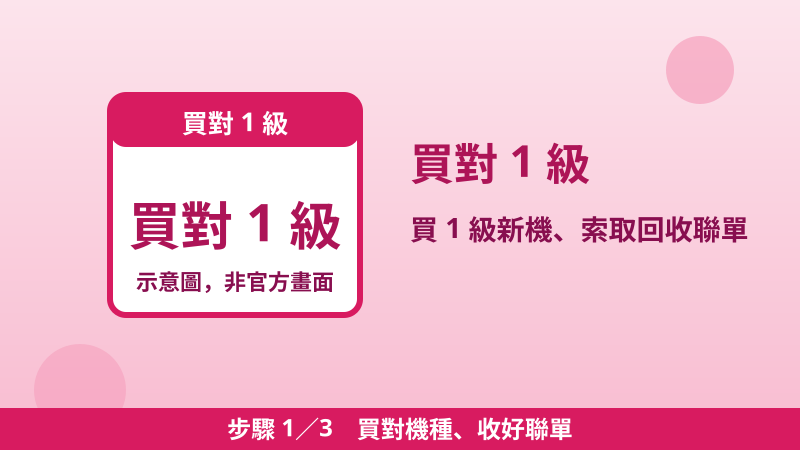
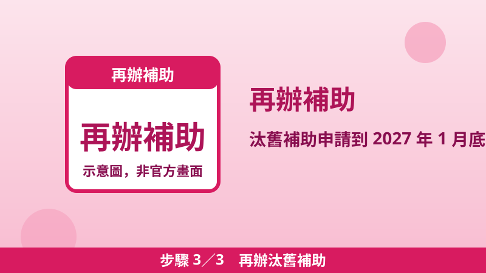

家電補助兩種怎麼領？汰舊換新 3,000 元 vs 貨物稅退稅最高 2,000 元
買冷氣、冰箱時常聽到兩個數字：「補助 3,000 元」和「退稅 2,000 元」。其實這是兩個不同機關、兩套程序的錢：一個是經濟部的汰舊換新節能補助，一個是財政部的節能電器退還減徵貨物稅。好消息是官方明文允許兩者疊加——同一臺符合條件的 1 級冷氣或冰箱，最高合計可以領到 5,000 元。最常見的損失不是資格不符，而是只辦了其中一邊、或以為店家會幫你一次辦好。
一張表看懂差異
| 比較項目 | 汰舊換新節能補助 | 退還減徵貨物稅 |
|---|---|---|
| 主辦機關 | 經濟部（能源署） | 財政部（國稅局） |
| 金額 | 每臺定額 3,000 元 | 每臺 500–2,000 元（依規格級距，見下表） |
| 適用品項 | 冷氣、冰箱 | 冷暖氣機、電冰箱、除濕機 |
| 能效門檻 | 必須第 1 級 | 第 1 級或第 2 級 |
| 要不要汰舊 | 要：舊機回收＋廢四機回收聯單第三聯 | 不用：申請要件未含汰舊，純新購可申請 |
| 期間 | 購買至 2026 年 12 月 31 日；申請至 2027 年 1 月 31 日；經費用罄提前結束 | 措施至 2029 年 12 月 31 日 |
| 申請期限 | 申請期間內提出 | 購買日次日起 6 個月內，逾期不得申請 |
| 申請方式 | 補助專屬網站線上申請（或依官網公告郵寄） | 稅務入口網線上申請，或紙本向任一國稅局 |
貨物稅退稅級距表（財政部官方稅額表）
退稅不是一律 2,000 元，而是按新機規格分級。以下數字查證自財政部稅務入口網公布的退稅稅額表：
| 品項 | 規格級距 | 每臺退稅額 |
|---|---|---|
| 電冰箱 | 總容積未滿 200 公升 | 500 元 |
| 總容積 200 公升以上、未滿 400 公升 | 1,200 元 | |
| 總容積 400 公升以上 | 2,000 元 | |
| 冷暖氣機 | 冷氣能力未滿 3.60 kW | 1,600 元 |
| 冷氣能力 3.60 kW 以上 | 2,000 元 | |
| 除濕機 | 除濕能力未滿 9 公升／日 | 500 元 |
| 除濕能力 9 公升以上、未滿 12 公升／日 | 900 元 | |
| 除濕能力 12 公升／日以上 | 1,200 元 |
可以疊加嗎？官方說法
可以。經濟部補助專屬網站明載：「申請本補助之家電產品，除可向國稅局申請退還減徵貨物稅外，不得申請其他機關補助。」意思是：貨物稅退稅是唯一被明文允許併領的項目；但同一臺家電若再去申請其他機關（例如地方政府）的補助，就不符合汰舊補助規定。同站也提醒：「本補助不受理退稅申請，請自行向國稅局申辦。」兩筆錢要自己分別跑兩個機關的程序。
疊加可以領多少（試算）
| 情境 | 汰舊補助 | 貨物稅退稅 | 合計 |
|---|---|---|---|
| 冰箱 400 公升以上、1 級、汰舊 | 3,000 | 2,000 | 5,000 |
| 冷氣 3.60 kW 以上、1 級、汰舊 | 3,000 | 2,000 | 5,000 |
| 冷氣未滿 3.60 kW、1 級、汰舊 | 3,000 | 1,600 | 4,600 |
| 冰箱 200–400 公升、1 級、汰舊 | 3,000 | 1,200 | 4,200 |
| 任何品項、2 級能效 | 不符合 | 依級距 500–2,000 | 只有退稅 |
| 除濕機（任一級距） | 不適用 | 500–1,200 | 只有退稅 |
| 純新購、無舊機可汰 | 不符合 | 依級距 500–2,000 | 只有退稅 |
辦理順序建議，三步驟不漏領

步驟 1買對機種、收好聯單
要疊加汰舊補助，新機必須是 1 級能效。汰舊回收時務必索取廢四機回收聯單第三聯，沒有這張聯單就無法申請汰舊補助；發票、保固卡、存摺封面兩邊都會用到，先拍照存檔最保險。
步驟 2先辦貨物稅退稅
退稅有購買日次日起 6 個月的硬期限，逾期就沒了，所以先到稅務入口網「購買節能電器退還減徵貨物稅專區」線上申請，或紙本向任一國稅局辦理。

步驟 3再辦汰舊補助
到經濟部補助專屬網站線上申請 3,000 元（申請期間到 2027 年 1 月 31 日，但經費用罄會提前結束，別拖到年底）。兩邊都送件後，各自審查、各自撥款。
常見問題
2 級能效可以領汰舊補助嗎？
不行。汰舊補助只認 1 級；2 級只能申請貨物稅退稅。
除濕機可以領汰舊補助嗎？
不行。汰舊補助品項只有冷氣、冰箱；除濕機只有貨物稅退稅（500–1,200 元，依除濕能力分級）。
汰舊補助申請了，還能申請地方政府的家電補助嗎？
不行。經濟部明載除貨物稅退稅外、不得申請其他機關補助，併領其他補助會不符合汰舊補助規定。
詳細教學：汰舊換新步驟與 6 項文件見家電汰舊換新補助申請教學；退稅資格與文件見節能電器貨物稅退稅教學；換機後怎麼省電費見電費級距怎麼算才省。
📎 資料來源
- 經濟部「住宅家電汰舊換新節能補助」專屬網站（3,000 元、購買／申請期間、併領退稅規定、經費用罄說明、專線 02-29559666）：save3000.moeaea.gov.tw
- 財政部稅務入口網「節能電器退還減徵貨物稅專區」與退稅稅額表（冰箱／冷暖氣機／除濕機各級距退稅額）：etax.nat.gov.tw
- 《貨物稅條例》第 11 條之 1（1、2 級、每臺減徵以 2,000 元為限、措施至 2029 年 12 月 31 日）：law.moj.gov.tw
- 財政部北區國稅局「節能電器貨物稅退稅延至 2029 年 12 月 31 日」（購買後 6 個月內申請）：mof.gov.tw
最後查證日期：2026-10-29
免責聲明：本文僅供參考，補助資格與金額以政府官方最新公告及承辦單位認定為準。